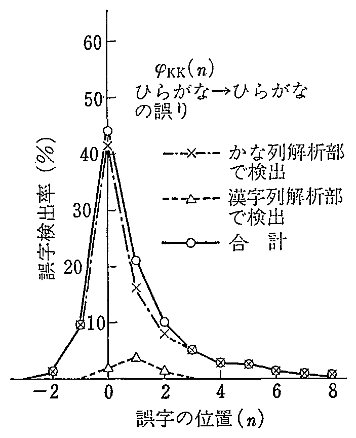
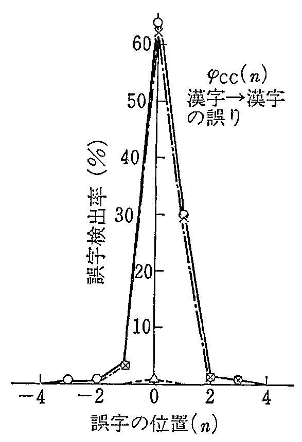
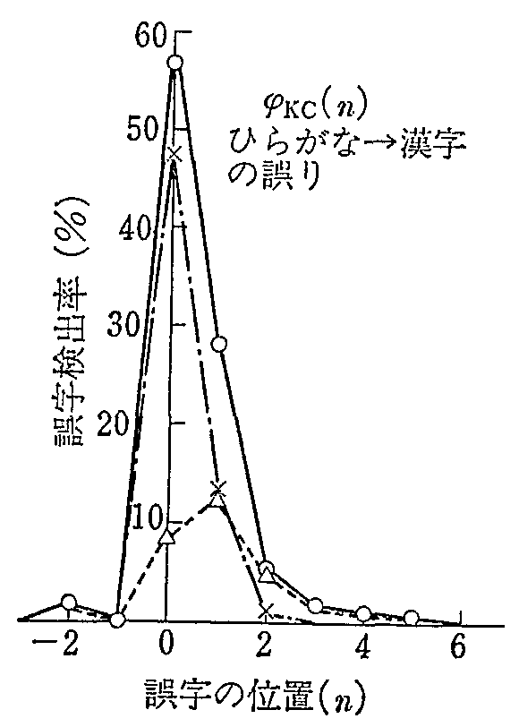
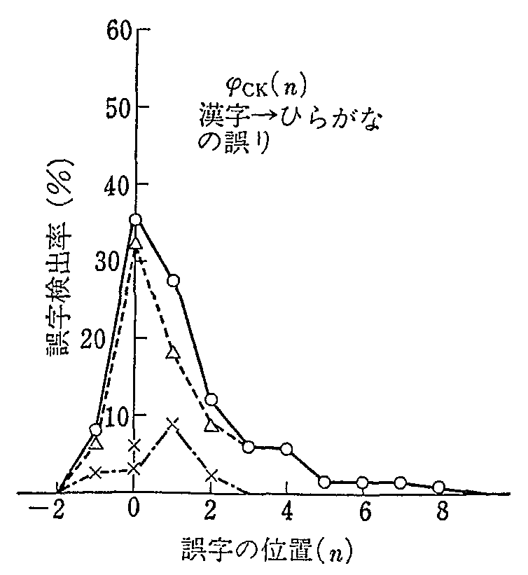
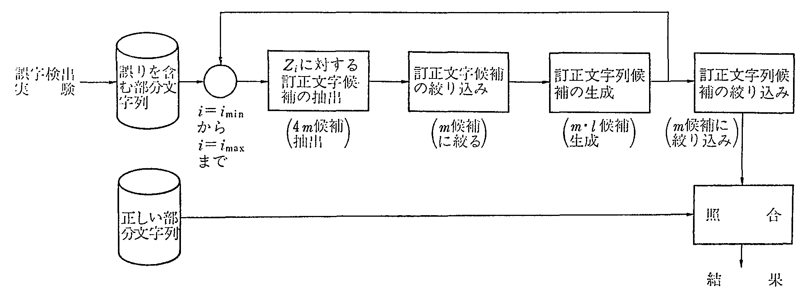
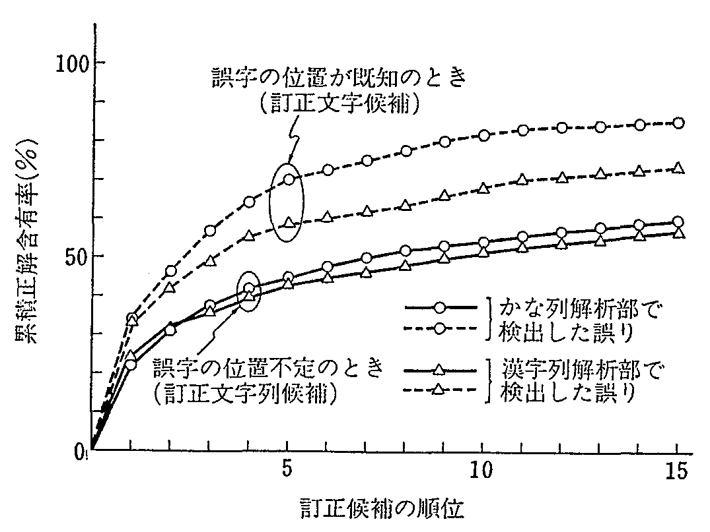

日本文に含まれる誤字を対象に誤字検出実験と訂正候補抽出実験を行い， 誤字の自動検出訂正の可能性を明らかにした． 誤字検出実験では，正しい文章の解析のために作成した単語解析プログラムを 誤字検出を目的とする日本文チェッカとして使用した結果，68％の誤字検出率を得たが， 検出不能の誤字例を分析した結果， 文節解析レベルのチェック機構の拡充と構文解析レベルのチェック機構の導入で， 誤字検出率はそれぞれ89，93%に向上する見込みを得た． 訂正候補の抽出では，誤字検出実験で検出した誤字に対して二次マルコフモデルを適用し， 誤字の前後の文字からみて接続確率の高い文字を候補文字として抽出した． また，誤字検出での検出特性に着目して正解文字の字種を確率的に推定することにより， 抽出した候補文字の正解含有率の向上を図った． 誤字検出実験では誤りを検出したとき，誤りの位置を正確に知ることは困難で， 誤りを含む文字区間とその区間内の文字の誤り確率が与えられる． そこで，訂正候補の抽出では，誤りの検出された区間に対して訂正文字列候補を抽出した． その結果，抽出された訂正文字列候補は上位15位までで約60%の正解含有率をもつこと， 誤りの位置が正確にわかれば，正解含有率は10〜25%向上することなどがわかった． これらの結果は，漢字OCRの誤読文字，リジェクト文字の救済等に応用できるものと期待される．
漢字OCR（光学的文字読取り装置）やWP（ワードプロセッサ）， 漢字ボードなど種々の入力装置を用いて計算機入力を行った日本文には， 誤字，脱字などの誤りが含まれることが多い． 従来これらの誤りを訂正するには人手による校正に頼るほかはなく， そのためのコストが無視できなかった． 本論文ではこれらの誤りの自動検出と自動訂正の可能性を明らかにするため， まず誤字を対象に単語解析プログラムを用いた誤字検出実験を行い， 誤字検出に必要な機能条件とそれによって得られる検出率の関係を示した． また，検出された誤字に対して二次マルコフモデルを用いた訂正候補抽出実験を行い， 確率モデルの自動訂正への適用性を明らかにした．
従来の日本文解析では解析する文は文法的にも意味的にも， 日本文として見たとき正しい文であることが前提となっており， 誤った文の文章解析が取り上げられた例はない． しかし解析技術の発展により， 最近日本文音声出力を対象とする漢字かな変換プログラムで99.5%の変換正解率が 得られる1),2)など， 正しい文を対象とする解析の精度が向上してきたため， 誤り検出が次の課題としてクローズアップされるようになった． そこで，本論文では上記漢字かな変換で使用されている単語解析プログラムを 誤字検出を目的とする日本文チェッカとして用いた誤字検出実験を行い， このプログラムの誤字検出への適用性， 今後拡充すべき機能条件とそれによって得られる検出率などを明らかにした．
誤字の自動訂正方法としては， 英文を対象にマルコフモデル3)〜6)や ハッシングの技法7)を用いた方法が提案され， すでにエディタ等に組み込まれて 使用されているが8),9)， 日本文の場合はべた書きされること，英文に比べて文字の種類が桁違いに多いことなどのため， これらの確率モデルの通用は困難と考えられてきた． しかし，精度のよい誤字換出の仕組みがあれば， 複数の訂正候補から正解を選択することができるため，確率モデルの適用効果が期待できる． 本論文ではその効果を明らかにするため， 誤字検出実験で検出された誤字に対して二次マルコフモデルを用いた訂正候補抽出実験を行い， 抽出した候補の数とそのなかに正解の含まれる割合との関係を明らかにした．
日本文チェッカの誤字検出では通常誤字の位置を正確に決定するのは困難である． 誤字の存在する一定の文字区間と同区間内の各文字の誤り確率が決定される． 実験ではこのように誤字確率が一定のびろがりをもつ場合と 誤字の位置が正確に決定できる場合の正解候補を比べ，位置決定の効果をも明らかにした．
誤り検出を目的とする日本文チェッカでは， 正しい文を正しいと判定する能力（正文認識率P）に加えて 誤った文を誤りと判定する能力（誤文検出率Q）が問題となる． 従来，Pについては十分高い値が得られているので，以下ではQ について論じる．
(1) 誤りの種類
一般の日本文の誤りには，単語表記誤り，文法誤り，単語用法の誤り，敬語・謙譲語の誤り， 時制・態の誤りなどがあり， 文脈や話者，著者の意図まで考慮して正誤判定規準を決めるのは困難である． 実験では著者が正しいと認めた原文を日本文入力装置を介して入力したときのような 原文と入力結果の比較できる場合を考え， 両者が一致したときを正，不一致のあるときを誤りとする．
このような規準で考えれば，誤りは�仝躬�，��脱字，�８軈淨�および，�い修譴蕕料塙腓察� に分類できる． 漢字OCRでは�，�最も多いと考えられる． 以下では�，慮蹐蠅紡仂櫃鮓堕蠅垢襦�
(2) 誤字の距離と識別距離
日本語文章中の一つの誤字の次の文字から数えて，次の誤字までの数を誤字の距離と決める． これに対して，日本文チェッカが二つの誤字を区別して検出できる距離を誤字の識別距離という． 個々の誤字を区別して検出するには誤字の距離が識別距離よりも大きいことが必要である．
実験で使用する単語解析プログラムは文節単位に単語解析を行うため， 誤字識別距離は一文節の最大文字数（約12文字）と考えられる． そこで，実験では安全をみて誤字の距離が15以上となるよう標本となる日本文を生成する．
実験で使用する単語解析プログラムはかな列解析部と漢字列解析部の二つの処理部から構成される． したがって誤字の型を漢字同士，ひらがな同士，およびその相互の四つの型に分けると， 各型の誤字検出率は誤字を検出する処理部によって異なると考えられる． 実験ではこれら4種の型の誤字に対するかな列解析部と漢字列解析部の誤字検出率を求める．
ただし，「ひらがな」と「漢字」はこの場合
「ひらがな」…ひらがなのすべて
「漢字」…漢字，カタカナ，英数字
を表すものとする．なお，記号類は誤らないものと仮
定する．
日本文チェッカが誤字と判定した文字の文章中の位置を誤字の検出位置とする． 本当の誤字は必ずしも検出位置の文字ではない． そこで，検出位置からみた本当の誤字までの距離を誤字検出距離と定め， 本当の誤字が前方にあるとき負，後方にあるとき正の整数で表す． また，誤字検出距離が n の文字の誤りの確率をψ(n) で表す． ψ(n) は一般に，
+∞
Σ ψ(n) = 1 (1)
n=-∞
を満足する．
実験では前述の4種の誤字の型に対してψαβを求める．
ただしαは元の正しい文字の字種（C：漢字，K：ひらがな）を示し，βは誤字の字種を示す．
誤字検出実験の手順を図1に示す.
┌───────────────────┐
│ ┌────┐ ┌────┐ ↓
原文─→│誤文生成├─→│誤字検出├─→結果の比較
└────┘ └────┘
┌適当な間隔で┐ ┌日本文チェッカと┐
└誤字を生成 ┘ │して単語解析プロ│
└グラムを使用 ┘
|
(1) 誤文の生成
標本用の原文として昭和57年3月17日付の日本経済新聞の第1面からの記事文を順次使用する． ただし，記事見出しは除く． この原文に対して，誤字の距離が15以上となるように選んだ文中の文字Xfを 誤字Ziにおきかえ誤字標本文を作成する． 誤字Ziは対象とする文字集合のなかから無作為に選択するため， ZiがXiと一致する場合があるが， このような場合は統計から除く．
以上の誤字標本文は4種の誤字の型に分けて，約500の誤字が発生するまで生成する．
(2) 誤字の検出
単語解析プログラムのかな列解析部による検出実験と漢字列解析部による検出実験を分けて行う． ただし，後者では前者で検出できなかった誤字のみを対象とする．
(3) 結果の比較
実験では原文と誤字の位置があらかじめわかっているので， 解析結果とこれを比較し，誤字検出率と誤字分布関数を求める．
(1) 誤字検出率
誤字検出実験の結果を表1に示す． 表中の検出率の平均は4種の誤字に対する単純平均を示す． この結果から以下のことがわかる．
| �� | かな列解析部ではひらがなの誤字が検出されやすい． ひらがな同士の誤りは70%以上検出されるのに対して， 漢字同士の誤りは1%程度しか検出できない． | |
| �� | 逆に漢字列解析部では漢字の誤字が検出されやすい． 漢字同士の誤りは70%近く検出される． | |
| �� | その結果，全体では単純平均で68%の誤字が検出できる． |
| 誤字標本の数 | かな列解析部 | 漢字列解析部 | 合計 | 未検出誤り数 | ||||||||||
| 検出数 | 検出率 | 検出数 | 検出率 | 検出数 | 検出率 | ||||||||||
| ひらがな→ひらがな | 449 | 321 | 71.5% | 22 | 4.9% | 343 | 76.4% | 106 | |||||||
| ひらがな→漢 字 | 457 | 245 | 53.6 | 63 | 13.8 | 308 | 67.4 | 149 | |||||||
| 漢 字→漢 字 | 491 | 6 | 1.2 | 335 | 68.2 | 341 | 69.5 | 150 | |||||||
| 漢 字→ひらがな | 428 | 97 | 22.7 | 153 | 35.7 | 250 | 58.4 | 178 | |||||||
| 合 計 | 1,825 | 669 | (平均)37.3 | 573 | (平均)30.7 | 1,242 | (平均)67.9 | 583 | |||||||
(2) 誤字分布関数
誤字分布関数ψαβ（n）を図2〜5に示す． これらの図から以下のことがわかる．
| �� | α→漢字（αは漢字またはひらがな）の型の誤字は位置が特定しやすい． | |
| �� | 逆にα→ひらがなの型の誤字は位置を特定しにくい． |
これは，漢字は2文字で単語となるものが多く，誤字も単語内で検出できることが多いのに対して， ひらがな単語はその前後関係から検出されることが多いためであると解釈される．
|
 |
|
 |
|
 |
|
 |
誤字を含む文要素の種類と誤字検出率の関係を分析すると以下のことがわかる．
(1) 「ひらがな→ひらがな」の誤り
誤字標本を分類すると，�―�詞の誤り（約40%），��活用語の活用部分の誤り（約30%）， �Ｌ騎萢兌�立語の誤り（約30%）に大別できる． これらのうち�◆き�が80〜90%検出されているのに対して，�，慮―侘┐鰐�65%である． 助詞の3/4を占める格助詞の誤り検出織構の強化が必要である．
(2) 「ひらがな→漢字」の誤り
前項と同様，誤字標本は三つに分類される． 検出率は50〜60%で前項に比べて低い． これは使用した日本文チェッカが動詞の活用行誤りの検出能力をもたないためで， 同機能の組込みの効果が期待される．
(3) 「漢字→漢字」の誤り
名詞の部分での誤りが多い． 普通名詞だけで約60%，接辞，数詞，人名・地名などを含めると90%にのぼる． これらのうち単独で用いられる普通名詞の誤りは90%程度検出されるが， 複合語の一部として使用される単語の誤りの検出率は約70%である． 活用語では動詞，形容詞の誤りが各6，3%含まれるが，これらの検出率は各20，50%と低い．
(4) 「漢字→ひらがな」の誤り
前項同様名詞の誤りが多い． 動詞の誤りの検出率が80%であるのに対して名詞類の誤り検出率は60〜70%と低い．
誤字検出実験で検出不能であった583件の誤りを詳細に分析し， 誤字検出用の日本文チェッカの具備すべき機能条件と それによって達成される誤字検出率を明らかにした． 表2に文節レベル，構文レベルの解析レベルで達成できる誤字検出率を示す．
| 誤りの型 | 文節レベル解析 | 構文レベルの解析 | |
| 現状 | 機能拡充 | ||
| ひらがな→ひらがな | 76.4 | 88.6 | 97.5 |
| ひらがな→漢 字 | 58.4 | 86.7 | 92.1 |
| 漢 字→漢 字 | 69.5 | 93.7 | 93.9 |
| 漢 字→ひらがな | 67.4 | 85.8 | 88.4 |
| 単 純 平 均 | 67.9 | 88.7 | 93.0 |
(1) 文節レベルの解析
正しい日本文を対象とする場合に比べて， 誤字を含む文の解析では以下の機能を充実させることが必要である．
(イ) 単語接続判定の強化
単語間接続規則に接続禁止項を設けること，文節適格性判定規則を適用することで， 48件の未検出誤字が検出可能となる．
(ロ) 単語適格性の認定
辞書未登録語の単語としての適格性の検定，辞書登録語の品詞と文節中の役割チェック， 名詞のサ変動詞化の可否チェックなどにより，219件の未検出誤字が検出できる．
(ハ) 意味的な単語接続解析
名詞類2単語の接続，接頭・接尾辞との接続など，接続関係のチェックで112件の誤字換出ができる．
以上の文節レベルの解析機能の拡充により，誤字検出率は89%が達成できる．
(2) 構文レベルの解析
文節の文中での役割を解析すれば，以下の誤りの検出が可能となる．
(イ) 格に関する誤り
助詞等の誤りで
| �� | 文節の格が変化し，不適格な文節となるもの（13件） | |
| �� | 格が消滅し，解釈不能となるもの（15件） | |
| �� | 文中不要な格，二つ以上の同一格の文節が生成されるもの（16件） |
(ロ) 動詞の誤り
動詞が他の動詞に変化し，動詞の要求する文章構造にマッチしなくなったもの， 動詞が消滅したものなど18件の誤りが検出できる．
(ハ) 役割不明要素
解釈不能な独立文要素の生成25件が検出可能となる．
以上の構文レベルの解析により，93%の誤字換出率が得られる見通しである． なお，構文レベルで検出される誤りは文節レベルの解析に比べて誤字の位置の局所化がむずかしく， 誤字分布関数の広がりは大きくなると予想される．
(3) 意味レベルの解析
意味レベルの解析の実現性については今後の換討を待たねばならないが， 誤字検出の観点からみると以下の2点に着目する解析が必要である．
(イ) 体言の意味カテゴリの変化
体言が付属語などを伴ってその意味カテゴリを変化させる． このプロセスを分析すれば，単語の文中での適格性検定の精度が上がる．
(ロ) 用言の意味カテゴリの変化
用言も助動詞や補助用言などを伴って意味カテゴリを変化させる． 体言と用言の意味カテゴリの整合性を検定すれば，用法の不自然な語が浮かび上がると予想される．
前章の実験では4種の型の誤字に対して，単語解析プログラムを 誤字検出用の日本文チェッカとして用いた場合の誤字検出能力を明らかにした． 本章ではそこで後出した誤字に対して，二次マルコフモデルを用いて訂正候補を抽出し， その正解率を評価する．
誤字検出実験で検出された誤りは，誤りの位置が特定できず， 一定のひろがりをもつ誤字分布関数でその区間と誤字確率が示される． これに比べて，誤りの位置が特定できる場合は，抽出した訂正候補の正解率は大きいと予想される． 本章では両者の比較をも行う．
誤字検出実験によれば，誤字の型ごとにみた誤字検出率は 解析レベル（かな列解析レベルと漢字列解析レベル）によって異なる． この点に着目して，誤字に対する正しい文字の字種を確率的に推定する．
(1) 候補文字の字種推定
原文中における4種の誤字の発生率をeαβとする．
ただし，α，βはそれぞれ正しい文字，誤った文字の字種（C：漢字，K：ひらがな）を示す．
また，原文中の漢字とひらがなが誤字となる
確率をeC，eKとすると，
eC＝eCC＋eCK，eK＝eKK＋eKC
が成り立つ．
同様日本文チェッカの誤字検出率をQαβ， 原文に含まれる漢字，ひらがなの割合をRC，RKとする． ここでは漢字，ひらがな以外の文字は少ないとし， RC＋RK〜1を仮定する．
さて，日本文文字列 Z＝Z1Z2…ZN のなかで Zi が誤字であったとき， Zi の字種から正しい文字 ��i の字種を推定する． 誤字検出で検出される誤りの割合は
| 正（Xi） | 誤（Zi） | 検出の割合 | |||
| 漢 字 | ／ ＼ | 漢 字 | RCeCCQCC | ||
| ひらがな | RCeCKQCK | ||||
| ひらがな | ／ ＼ | 漢 字 | RKeKCQKC | ||
| ひらがな | RkeKKQKK |
となるから， 誤字Ziの字種がβのとき 正しい文字Xiの字種がαである確率γβαは それぞれ以下のとおりである．
| γCC＝ | RCeCCQCC | ┐ │ │ │ │ │ │ │ │ │ │ │ │ │ │ ┘ | (2) | |
| -------------------------------- | ||||
| RCeCCQCC+RKeKCQKC | ||||
| γCK＝ | RKeKCQKC | |||
| -------------------------------- | ||||
| RCeCCQCC+RKeKCQKC | ||||
| γKC＝ | RCeCKQCK | |||
| -------------------------------- | ||||
| RCeCKQCK+RKeKKQKK | ||||
| γKK＝ | RKeKKQKK | |||
| -------------------------------- | ||||
| RCeCKQCK+RKeKKQKK |
誤字検出実験では4種の誤字がほぼ同数となるよう 誤字の標本を生成しているから，検出された誤字から 正しい文字の字種を推定するには，
| RCeCK＝ RCeCC＝ RKeKC＝ RKeKK | (3) |
とおいて，γβαを
| γCC＝ | QCC | ┐ │ │ │ │ │ │ │ │ │ │ │ │ │ │ ┘ |
(4) | |
| ---------------- | ||||
| QCC+QKC | ||||
| γCK＝ | QKC | |||
| ---------------- | ||||
| QCC+QKC | ||||
| γKC＝ | QCK | |||
| ---------------- | ||||
| QCK+QKK | ||||
| γKK＝ | QKK | |||
| ---------------- | ||||
| QCK+QKK |
から求めるとよい．表2の結果を代入してγは表3の とおりとなる．
|
かな列解析レベル | 漢字列解析レベル | |||||||
| γCC | 0.051 | 0.655 | |||||||
| γCK | 0.949 | 0.345 | |||||||
| γKC | 0.428 | 0.252 | |||||||
| γKK | 0.572 | 0.748 | |||||||
(2) 誤字分布関数の合成
日本文チェッカが誤りを検出したとき，検出位置の 文字の字種からみた誤字分布関数ψ*C(n)，ψ*K(n)を下 記のとおり定義する．
| ψ*C(n)＝γCKψKC(n)+γCCψCC(n) | ┐ │ │ ┘ |
(5) | |
| ψ*K(n)＝γKCψCK(n)+γKKψKK(n) |
一般に，検出位置の文字が誤字とはいえないが， 実験では検出位置の文字が誤字である確率が最も大きいため， 部分文字列候補の抽出では式(5)を用いる．
図2〜5の結果を式(5)に代入して ψ*C(n)，ψ*K(n) は求まる．
(1) 二文字連鎖確率
正しい日本文中のi番目の文字をXiとする． Xi のあとに文字 Xi+1 が現れる確率を Xi に対する Xi+1 の後方連鎖確率と呼び P(Xi|Xi+1) で表す． 同様，Xi に対する Xi-1 の前方連鎖確率 P(Xi|Xi-1) を定義する． すべての Xi，Xi+1 および Xi，Xi-1 の組合せに対して， P(Xi|Xi+1)， P(Xi|Xi-1) は統計的に求まる． 以下では，新聞記事5日分（約60万事）を対象に統計分析によって得られた値を用いる．
(2) 訂正候補の生成
文中の部分文字列 Zi-1ZiZi+1 において Zi が誤字であるとする． このときは条件から Zi-1，Zi+1 は正しいことが仮定される （Zi-1＝Xi， Zi+1＝Xi+1）． また，Ziの字種は既知であるが，それに対する正しい文字 Xi の字種は未知である． そこでまず，Zi-1 の文字に着目し，Xi が漢字の場合とひらがなの場合に分けて Zi-1 の後方連鎖確率 P(Zi-1|Xi）の大きい順におのおの m 個の候補文字を抽出する． 次に，Zi+1 の文字に着目し，前方連鎖確率 P(Zi+1|Xi） の大きい順に Xi の漢字候補，ひらがな候補をそれぞれ m 文字抽出する． 以上により，Xi に対し，4m 文字の訂正候補が抽出される．
(3) 訂正文字候補の絞り込み
訂正候補文字 X*i とその前後の文字を組み合わせた部分文字列 Zi-1Xi*Zi+1 に対して次の評価関数 E(X*i） を定義する．
| E(X*i）＝γβαP(Zi-1|X*i）P(Zi+1|X*i） | (6) |
ただし，βは誤字 Zi の字種（C：漢字，K：ひらがな）， αは X*i の字種で， γβα は式(4)で与えられる．
前項で得られた 4m 個の訂正文字候補のすべてを式(6)で評価し， 上位 m 個の候補を残す． このとき，上位 m 候補はすべて異なる文字候補となるよう， 同一文字候補のある場は1候補を残す （前方，後方の連鎖から同一文字が 4m 候補のなかに現れることがある）．
誤字検出実験で誤字が存在すると判定された文字区間を対象とする訂正文字列候補を生成する．
まず，誤字の検出位置が0となるよう原文の文字番号iをつけなおし， 誤字分布関数 ψ*β(i）がψ*β(i）＞0 となる文字区間を imin＜i＜imax とおくと， 誤りの可能性のある文字は imin＋1≦i≦imax−1 なる，|imin|+|imax|-1（＝l）文字である．
そこで，この区間のすべての文字 Zi に対して， 前節の方法で m 個ずつの訂正文字候補 X*i を抽出し，原文中の部分文字列の該当文字 Zi を X*i でおきかえて得られる部分文字列を X* とすると， X* は m・l 通り生成される．
二次マルコフ性を考える限り，訂正文字列候補の評価では imin≦i≦imax なる l＋2 文字の部分文字列を考えればよい． ここでは，この部分文字列の文字連鎖確率を一方向に評価するための評価関数 E(X*）を以下のとおり定める．
| E(X*）＝ψ*β(k) | imax−1 | P（Xi|Xi+1） | (7) |
| Π | |||
| i＝imin |
ただし，k は部分文字列中，訂正文字候補でおきかえられた文字の位置， βは i＝0 なる文字 Zi の字種を示し， ψ*β(k) は式(5)で与えられる．
m・l 通りの訂正文字列候補 X* を式(7)で評価し，上位 m 個の文字列を最終的な訂正文字列候補とする．
実験の手順を図6に示す． 本実験では誤字検出実験で検出された1,242件の誤りに対して， 各15（＝m）個の訂正文字列候補を抽出し， 原文と比較して，訂正文字列候補が正解を含む割合（正解含有率）を求めた．
また，誤字の位置が既知の場合については訂正文字候補を抽出し，その正解含有率を求めた．
|
 |
抽出した訂正候補の順位と累積正解含有率の関係を 図7に示す．この図から次のことがわかる．
| �� | 漢字列解析に比べてかな列解析で検出された誤字に対する正解含有率のほうが 3〜4％高い． | |
| �� | 誤字の位置が特定できる場合は正解含有率は10〜25%向上する． かな列解析レベルで検出された誤字に対する効果が大きい． |
これらは，かな列解析で検出される誤りは正しい文字 Xi が ひらがなである場合が多いこと，ひらがなの文字数は漢字の数に比べて少なく， 訂正候補を漢字と同数抽出したとき，漢字に比べて有利であること， などによるものであり，字種により誤字の型を区別した効果を示すものと考えられる． 一般に日本文チェッカでは，モジュールによって誤字検出特性が異なるから， 訂正候補の正解含有率を上げるには，誤りをそれを検出したモジュールによって区別し， モジュールの誤字検出特性を利用して誤字存在区間の局所化と正解文字の字種推定を行うとよい．
|
 |
漢字OCRの認識誤り文字は， 誤読文字とリジェクト文字に大別できる10)． 前章までの方法を用いれば，これらの誤りに対して以下の自動訂正方式が実現できる．
まず，誤読文字の場合はOCRから得られる情報がない． したがって，日本文チェッカ（2章）を用いて誤読文字の有無と，その存在区間を調べ， 訂正候補抽出プログラム（3章）を用いて訂正部分文字列候補を生成する． このとき複数の候補が得られるから， その一つ一つを原文の該当部分と置き換えて得られる日本文を再度日本文チェッカで検定し， 正しいものを解とする．
次に，リジェクト文字は誤りの位置が既知であるため誤り検出の必要はない． OCRはリジェクト文字に対して複数の訂正用文字候補を抽出しているが， これらの候補文字は光学的処理過程で得られたもので， 認識アルゴリズム上，正解の識別が困難な文字の集合である． これに対して，二次マルコフモデルで得られる候補文字は， 前後の文字の連鎖確率に基づいて得られた文字の集合であるため， OCRの抽出した候補文字と偶然一致する確率は十分低いから， 両集合を照らし合わせ，一致する文字を正解とする． 二つ以上の文字が一致する場合は，日本文チェッカによってそのうちの一つを選択する．
前章までの実験結果によれば，誤読文字では誤字検出率が約70%， 訂正候補の累積正解含有率が約60%であるから自動検出訂正の訂正率は約40%である． これに対して，リジェクト文字は，OCRが抽出した訂正候補の正解含有率が100%に近いうえ， 二次マルコフモデルによって抽出される候補の正解含有率が80%前後とみられるから， 訂正率は約80%と推定される． したがって，誤読文字とリジェクト文字の比を1:4と仮定すると， 漢字OCRの認識誤りは約70%減少するものと期待される．
なお，本論文では誤字の発生が無作為である場合を扱っているが， 漢字OCRの誤りは無作為でなく一定の傾向が認められる． したがって，日本文チェッカを漢字OCRの特性に合わせてチューンアップすれば， 誤字検出率が向上し，認識誤りの訂正率が向上すると期待される．
ワードプロセッサ（WP）で入力した文章など，一般の日本文の誤りは多種多様である． 2章では誤字のみを対象とした誤り検出実験を行ったが， 日本文チェッカとして使用した単語解析プログラムは脱字，誤挿入の検出でも有効で， 一般の日本文の誤り検出にも適用可能と考えられる． ただし，この場合は3章で示した訂正候補抽出機構をそのまま適用することは困難であり， 訂正候補抽出ではViterbiの方法11)などの導入が必要である．
日本文に含まれる誤字を対象に，誤り検出実験と訂正候補抽出実験を行い， 誤字の自動検出と自動訂正の可能性を示した．
まず，誤字検出実験では正しい日本文の解析用として作成した単語解析プログラムを 日本文チェッカとして用いた場合68％の誤字検出率が得られることがわかった． また，この実験で検出不能であった誤字の例から，日本文チェッカとしての機能条件を調べ， 文節解析レベルの若干の改良で誤字検出率が89%となること， 文節の文中での役割の解析（構文解析レベル）の導入で誤字検出率は93%になることなどを示した．
次に，誤字に対する訂正候補抽出実験では， 誤字検出実験で検出された誤字1,242件を対象に二次マルコフモデルを用いて， それぞれ15個の訂正文字列候補を生成し，正解と比べて訂正候補の正解含有率を求めた． また，誤字の位置が確定する場合の正解含有率向上の程度も調べた． その結果，訂正文字列候補は上位15候補で約60%の正解含有率をもつこと， 誤字の位置が確定する場合は約80%の正解含有率となることなどがわかった．
なお，誤字検出実験では，日本文チェッカの解析レベルによって誤字検出特性が大きく異なる． そこで訂正候補抽出実験では訂正率を向上させるため， 誤字の検出された解析レベルに着目して元の正しい文字の字種を確率的に推定し， 字種の違いを考慮した二文字連鎖確率によって訂正候補を抽出した． また，文字連鎖確率の適用では，誤字の前後2方向から候補文字を抽出し， 正解含有率の向上を図った． これらの方法は今後， 構文解析レベルの日本文チェッカや三次マルコフモデルを導入した場合も有効と考えられる．
おわりに，実験プログラムの作成，実験結果の集計などでど協力をいただいた 長岡技術科学大学神成明宏氏に感謝する．